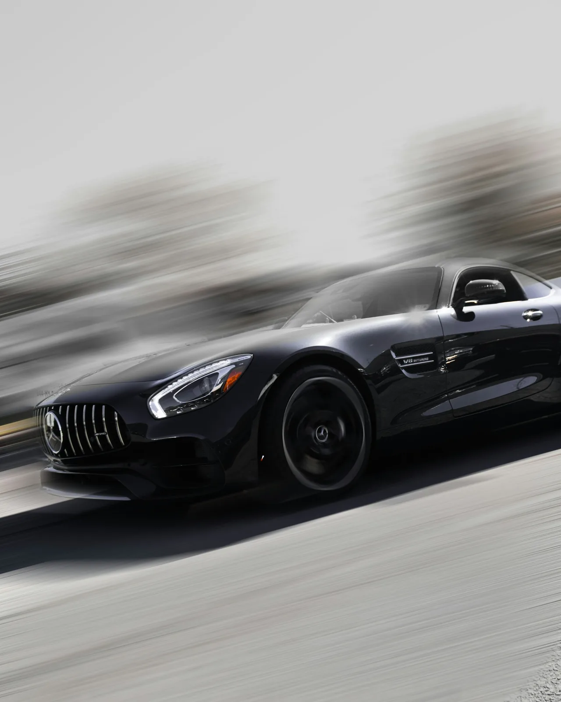
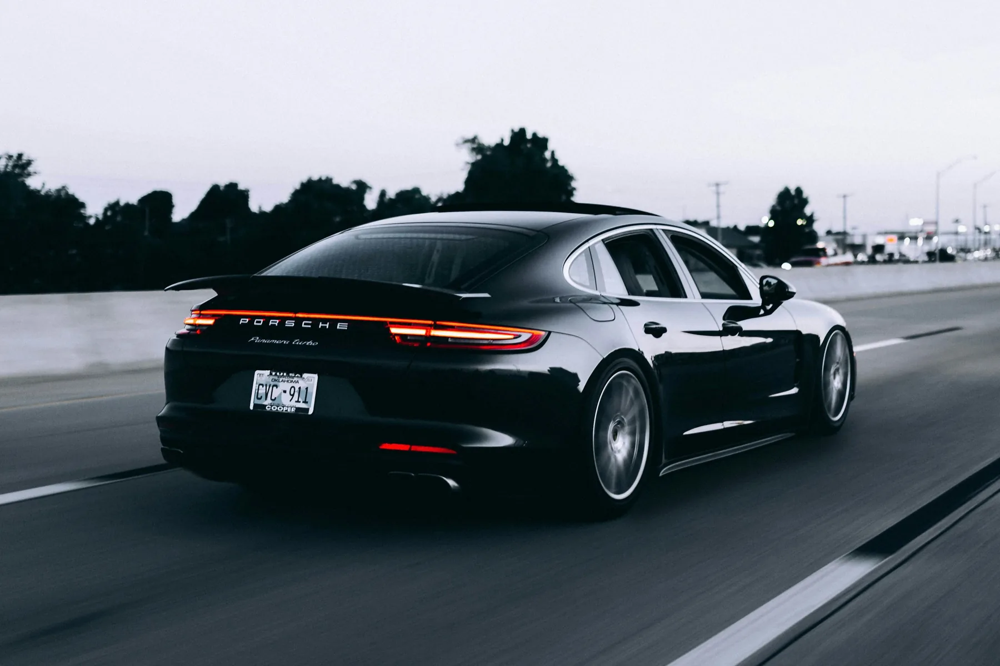
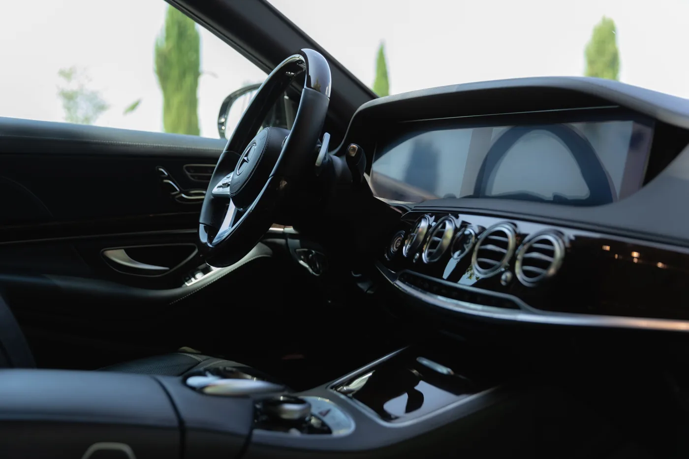
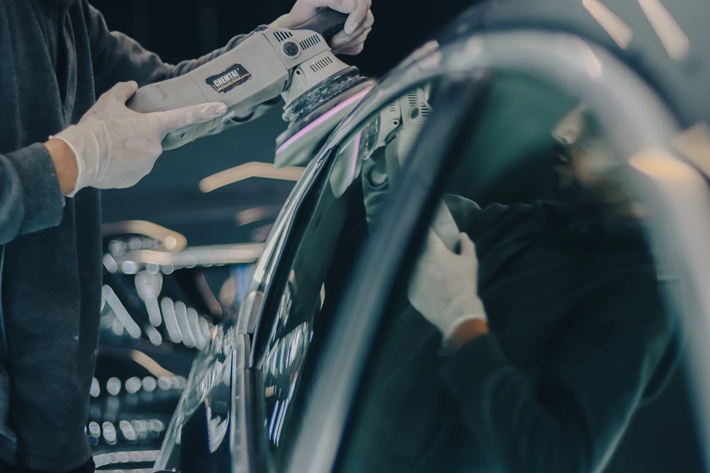
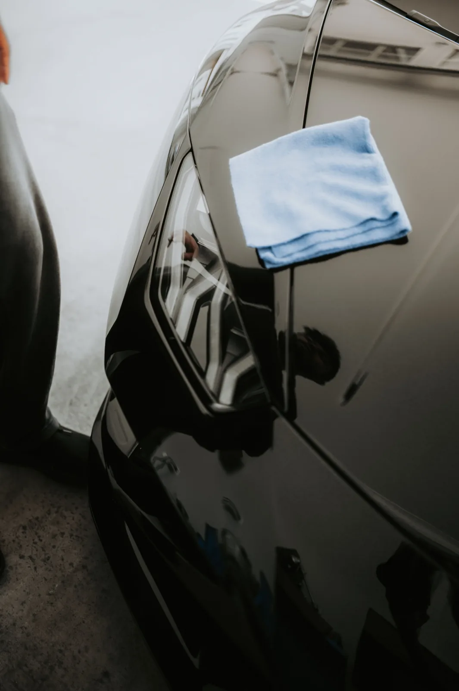
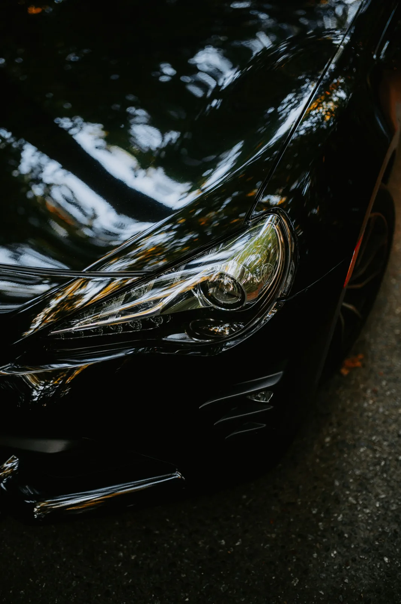
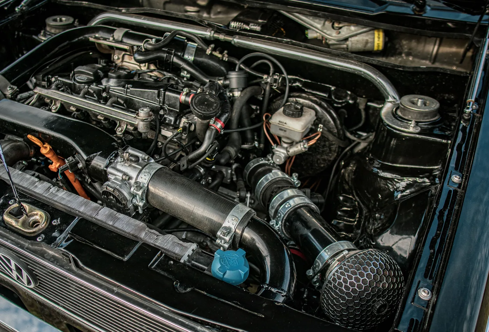
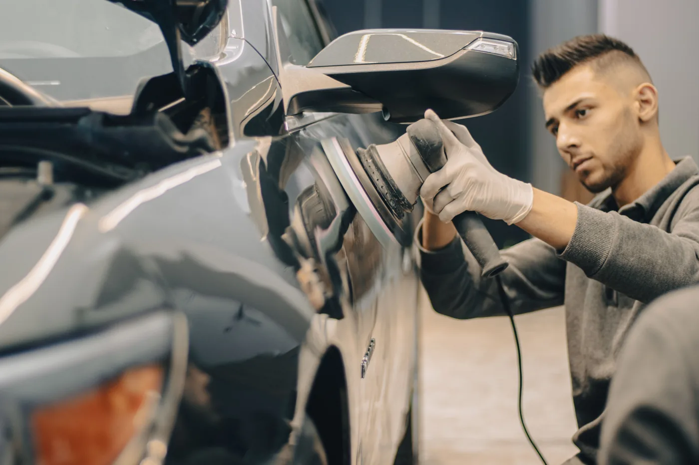

01ფასი შეთანხმებით
ექსტერიერის დეტეილინგი
კორპუსის, დისკებისა და გარე დეტალების მოვლა — ყურადღებით შერჩეული დამუშავებით.

ავტომობილის მოვლა · ყველა დეტალში
პროფესიონალური დეტეილინგი, ინტერიერის მოვლა და საღებავის დაცვა.
01 / ჩვენი სერვისები
შეარჩიე მომსახურება შენი ავტომობილის საჭიროების მიხედვით. მოცულობა და ფასი შეთანხმდება მდგომარეობის შეფასების შემდეგ.

01კორპუსის, დისკებისა და გარე დეტალების მოვლა — ყურადღებით შერჩეული დამუშავებით.

02სავარძლების, იატაკისა და სალონის ზედაპირების წმენდა, მასალების თავისებურებების გათვალისწინებით.

03საღებავის მდგომარეობის შეფასება და ზედაპირის დამუშავება ბზინვარების გამოსაკვეთად.

04დამცავი საფარის დატანა წინასწარ მომზადებულ ზედაპირზე. დეტალები შეთანხმდება შეფასების შემდეგ.

05ფარების ზედაპირის მდგომარეობის შეფასება და შესაბამისი დამუშავების შერჩევა.

06ძრავის სივრცის მოვლა ავტომობილის თავისებურებებისა და საჭიროებების გათვალისწინებით.
02 / ვიზუალური განსხვავება
გადაწიე გამყოფი და შეადარე ვიზუალური ეფექტი.
დემო შედარება: ერთი ფოტოს ვიზუალური ეფექტი. რეალური სამუშაოს შედეგს არ ასახავს.
რატომ APEX AUTO DETAILING?
ყოველი ავტომობილი განსხვავებულია. მოვლაც მისი მდგომარეობისა და შენი სურვილების მიხედვით უნდა შეირჩეს.
ზედაპირიდან ყველაზე პატარა ელემენტამდე — გააზრებული მოვლა.
დამუშავებისთვის შესაბამისი საშუალებებისა და მეთოდების შერჩევა.
ყურადღება მომზადების, შესრულებისა და საბოლოო დათვალიერებისას.
მომსახურების მოცულობა შენი ავტომობილის საჭიროების მიხედვით.
03 / ნამუშევრების გალერეა
საილუსტრაციო ფოტოები — დემო ვიზუალური მიმართულება. რეალური ნამუშევრებით ჩასანაცვლებელია.
04 / როგორ ვმუშაობთ
დეტალები თავიდანვე შეთანხმდება — მომსახურებიდან ვიზიტის დაგეგმვამდე.
გაგვიზიარე, რა სჭირდება შენს ავტომობილს.
შეათანხმე სამუშაოს მოცულობა და დეტალები.
ვიზიტის დრო წინასწარ შეთანხმდება.
სამუშაოს შემდეგ ერთად დაათვალიერე ავტომობილი.

საილუსტრაციო ფოტო05 / ჩვენ შესახებ
APEX AUTO DETAILING-ის კონცეფცია მარტივია: ავტომობილის იერს ყურადღება ყველა ეტაპზე სჭირდება — პირველი დათვალიერებიდან ბოლო დეტალის დამუშავებამდე.
ექსტერიერი, ინტერიერი და საღებავის მოვლა ერთიან მიდგომას ქმნის. შეარჩიე ის, რაც შენს ავტომობილს ახლა სჭირდება.
ეს გამოგონილი ბიზნესის პორტფოლიოს დემოა. ტექსტი და მომსახურებები კონცეფციის ნაწილია.
დაგეგმე შემდეგი ნაბიჯიშენი ავტომობილის შემდეგი ნაბიჯი
06 / დაგვიკავშირდი
აირჩიე სასურველი სერვისი და მოამზადე ვიზიტის მოთხოვნა.
რუკა დაემატება რეალური მისამართის დადასტურების შემდეგ.